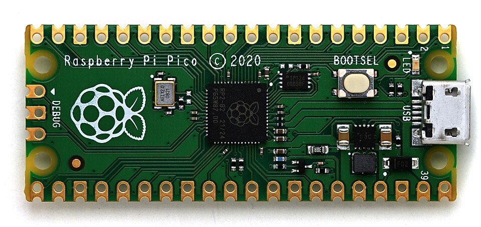
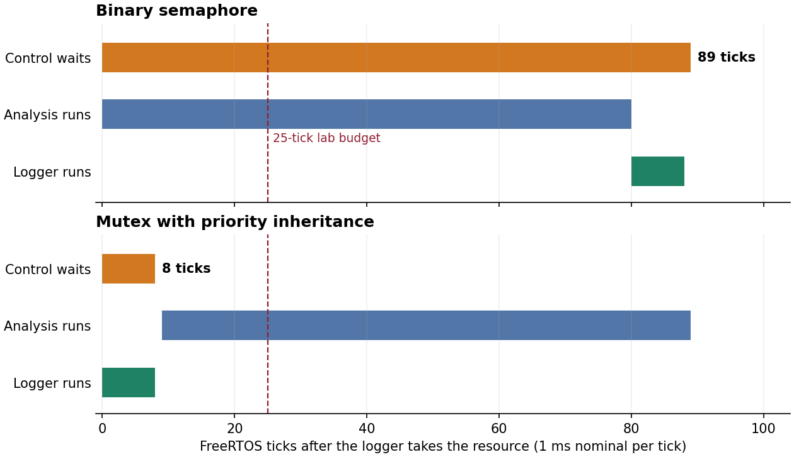

Measure a control task waiting on FreeRTOS
Run the same three-task workload with a binary semaphore and a mutex. Compare which task runs while control waits, what priority the logger runs at, and whether the shared-resource wait fits a 25-tick exercise budget.

Photo by Phiarc, scaled. Original photograph · CC BY-SA 4.0.

Watch. Observe which task runs at each tick before measuring the start of the periodic task on the trainer. DigiKey and Shawn Hymel · Task scheduling in FreeRTOS.
Build the Linux exercise
Use Linux with a C compiler, GNU Make or another CMake generator, CMake 3.16 or newer and the POSIX headers. No board or robot is required. Download CMakeLists.txt, FreeRTOSConfig.h and robot_task_latency.c into one directory. Download the source archive from the FreeRTOS-Kernel V11.2.0 release and unpack it beside those files. Replace the kernel path below if the directory has a different name.
cmake -S . -B build -DFREERTOS_KERNEL="$PWD/FreeRTOS-Kernel-11.2.0"
cmake --build build
timeout 10 ./build/robot_task_latency binary > binary.csv
timeout 10 ./build/robot_task_latency mutex > mutex.csvEach process runs a fresh scheduler and prints CSV once the tasks finish. Keep stderr visible for the control wait and check that each command exits with status zero. For this exercise the semaphore starts with its one token available. While holding the token or mutex, the logger signals control, which makes analysis ready just before attempting to take the resource. The logger has eight ticks of synthetic ready work left, and analysis stays ready for eighty ticks. Priority values 1, 2 and 3 belong to logger, analysis and control. The supervisor waits for task completion before ending the host scheduler.
Read the wait from the trace
Subtract the tick on control_waits from control_takes. Use the sequence column to order events recorded on the same tick. The Linux host run used a 1 kHz configured tick. Host scheduling and tick delivery can vary.

| Resource | Who runs first after control blocks? | Logger’s effective priority on resumption | Observed wait | 25-tick budget |
|---|---|---|---|---|
| Binary semaphore | Analysis | 1 | 89 ticks | Miss |
| Mutex | Logger | 3 | 8 ticks | Pass for this run |
Check that the logger entered the critical section before control arrived. In the semaphore case it already owned the token when analysis started, so the high-priority wait includes the analysis interval. Changing that object to a mutex keeps the logger at priority 3 for its remaining work and lets the controller take the buffer before analysis starts. The lab measures resource wait in scheduler ticks. Target execution time, real interrupt latency, stack margin and actuator reaction need separate evidence.
Reproduce a missed deadline with the mutex
- Change
LOGGER_WORK_TICKSfrom8to35, rebuild and run mutex mode. Predict which task will run first and whether the wait will cross 25 ticks. - Split a real logging operation into a bounded copy inside the lock and slow formatting or I/O after release. Explain who owns each buffer and what happens if logging cannot keep up. Re-run with eight ticks inside the lock as the shortened model.
- Write a test record with release event, resource owner, maximum observed wait, load conditions, deadline and observed late behavior. On a real target repeat with a timestamp or GPIO marker that has known resolution and instrumentation overhead.
In 15 runs of each original variant, the binary semaphore wait was 88–89 ticks and the mutex wait was 8 ticks. The 35-tick variant still let the logger run next at priority 3. The measured wait was 35 ticks, over the exercise budget.
Does a 35-tick critical section hit the 25-tick budget once it inherits priority?
No. The logger still needs roughly 35 ticks before it can release the mutex. Inheritance keeps analysis from running ahead of it. The remaining hold time still dominates the control wait.